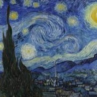
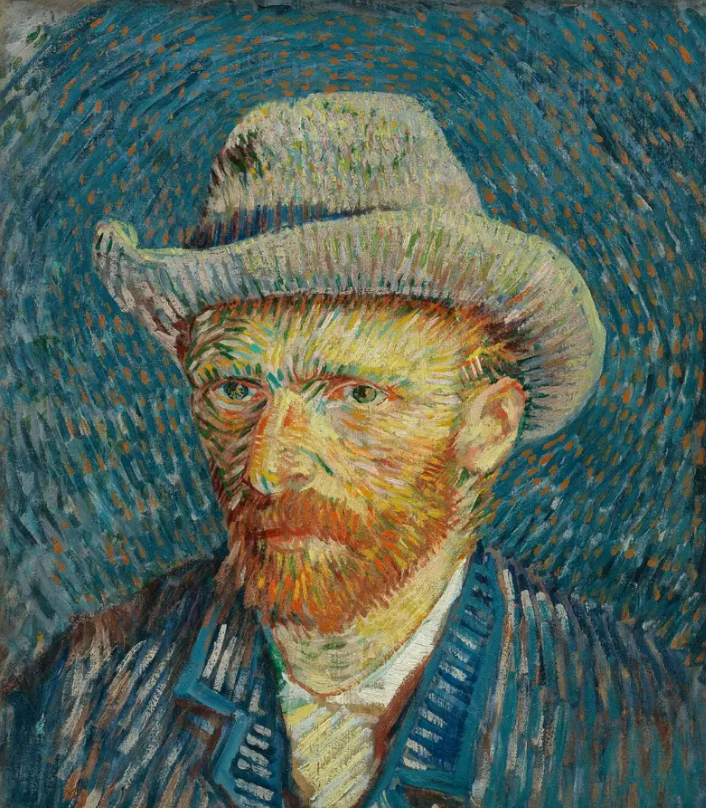
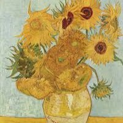
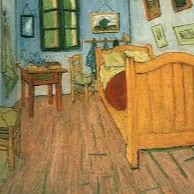

A Noite Estrelada

Pintada em 1889, é considerada uma das obras mais conhecidas de Van Gogh.
Um dos pintores mais influentes da história da arte.

Vincent Willem van Gogh nasceu em 30 de março de 1853, na cidade de Zundert, nos Países Baixos. Foi um pintor pós-impressionista que produziu algumas das obras mais famosas da história da arte.
Apesar de sua importância atual, Van Gogh enfrentou dificuldades financeiras e emocionais durante a vida. Seu reconhecimento artístico aconteceu principalmente após sua morte.

Pintada em 1889, é considerada uma das obras mais conhecidas de Van Gogh.

Série de pinturas que se tornou símbolo do estilo vibrante do artista.

Representação do quarto onde viveu na cidade francesa de Arles.